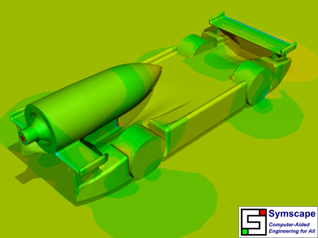
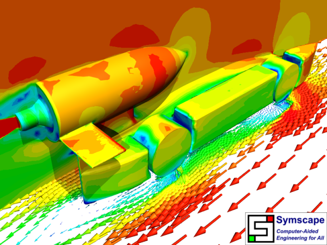

F1 in Schools World Finals CFD Analysis
Brett Sizeland and his Basilisk Performance team won the Australian F1 in Schools title in March 2010, helped by Computational Fluid Dynamics (CFD) simulations performed in Caedium Professional. However, it doesn't end there, by winning the Australian title the team qualified for the F1 in Schools World Finals to be held September 20-22, 2010 in Singapore. Without pausing for breath, Brett set about designing a new car, with help again provided by Caedium CFD simulations.
Background
Due to rule changes brought in for the World Finals the the car that won the Australian title required a radical redesign. The new rules required a wire guide to run the length of the car, which then prevented the split chassis design that worked so well in the Australian title car.
Brett designed 2 alternate cars in CATIA for CFD analysis in Caedium. You'll be able to see from the results below that the main difference between the 2 designs was the placement of the front wing - high-mounted in Design 1 and low-mounted in Design 2. Also Design 1 used blended end plates on the wings, whereas Design 2 did not have any end plates.
Physics
The flow conditions and turbulence model were identical to those in the CFD simulations performed for the Australian title car:
- Free-stream air speed and moving-ground speed = 22 m/s
- Wheel rotation speed = 16,307 rpm = 97,804 deg/s
- CO2 jet speed (assuming nozzle diameter = 4 mm) = 154 m/s
- k-omega SST
Results
At the time of this study a pre-release of Caedium with new parallel and 64-bit capabilities was used to perform the CFD simulations - this allowed much faster turnaround time of the simulations compared to those performed for the Australian title car.
Design 1
Cp Design 1 Rear View
Cp Design 1 Front View
Velocity Design 1 Rear View
Velocity Design 1 Front View
Streamlines Design 1 Rear View
Streamlines Design 1 Front View
Design 2
Cp Design 2 Rear View
Cp Design 2 Front View
Velocity Design 2 Rear View
Velocity Design 2 Front View
Streamlines Design 2 Rear View
 Streamlines Design 2 Front View
Streamlines Design 2 Front View
Forces
| Quantity | Title Car | Design 1 | Design 2 |
| Drag (N) | 0.318 | 0.370 | 0.376 |
| LIft (N) | 0.20 | 0.23 | 0.18 |
Conclusion
The first thing to note is that both of the new designs both have more drag than the Australian title design - most likely due to the increase in surface area and cross-sectional area with the new full chassis. The drag difference between the two new designs is essential zero. Given that the drag is directly proportional to the cross-sectional area of the car, which in turn is dominated by the CO2 canister housing and the wheels, then the placement of the front wing seems to have little effect on the overall drag of the car. However, this is not the case for lift. It appears that locating the front wing close to the ground has caused some mild ground effects, resulting in downforce that reduced the lift for Design 2 compared to Design 1. This is potentially a desirable feature to ensure that the nose of the car pitches downwards so that the car doesn't have a tendency to get airborne.
At the time of writing, the new Basilisk Performance car is still under wraps, but in a few days all will be revealed as teams from around the world compete for the F1 in Schools World Finals. Hopefully Basilisk Performance will be in the mix when awards are presented.
Good luck Brett, Ben, Keira, and Aidan.
Feedback
Questions? Ideas? Problems?

Comments
3D Red-Cyan Movie
Break out those red/cyan glasses and check out the Caedium CFD simulation of the air flow around the Basilisk Performance CO2 rocket car Design 2 for the F1 in Schools 2010 World Finals.
Lift on Front Wing
What is the angle of pitch for the front wing? I gather it may be zero if you want to minimize drag. If it is zero, then is it possible that the upwash from the front end of the car is giving the front wing positive angle of attack, and therefore also creating lift? Granted it is more complicated than that because of the interference between the front wing and the front of the car. Maybe a third configuration needs to be tested with no front wing.
F1 in Schools Front Wing Ground Effects
Thanks for your thoughts on the front wing. As background, the F1 in Schools stipulate that you have to have an airfoil front and back. In terms of its design you are left to decide what shape it takes and were to place it.
I think the high front wing on Design 1 was likely generating lift - you can see the high speed flow (red in the Velocity Design 1 Front View) on the symmetry plane which is on the upper surface of the wing - reducing the pressure and contributing to lift. However, in the low front wing on Design 2 the high speed flow is underneath the wing (watch the animation) due to ground effects and so in this case you will likely see downforce rather than lift.
That's the beauty of CFD and
That's the beauty of CFD and tools like yours. Not only can one visualize the flow and pressure but also integrate the forces over various areas to better understand what is going on. For example, one can integrate the forces over the front wing in the high position to determine it's contribution to the overall loads. Or, one can integrate the pressure over the bottom surface of the low wing to see how suction contributes and integrate the pressure over the top surface of the low wing to see how the high pressure from the car's forebody contributes. Fun stuff.
How can you create the rotation effect of the car in the video?
I have downloaded the 'F1 in Schools CO2 Jet Car' ( http://www.symscape.com/downloads ), but in applying a Rotate (Geometry -> Transformations). the camera view gets zoomed in really far and stays at that zoom level, while everything else rotates.
Using the Scale (Geometry -> Transformations) tool (on the entire sim) doesn't seem to help...
Thanks.
Camera Rotation Movie
Good question.
To produce the camera rotation movie/animation effect:
You are essentially setting up key frames for the camera, so if you want to perform a second rotation as in the example you'll need to set your first key-frame (rotation) at the halfway time period and then set your final key-frame at the end.
You can modify your transforms by selecting the background and then in the Properties Panel select the Transform tab. In the associated properties with each transform is the Transition property where you have the option to set the transition type - in the case of the example I used the Smooth option.
For a smoother animation (more frames, longer movie) try reducing the simulation Time->Increment.
Set movie image size etc by selecting File->Preferences, then review the image and movie preferences in the Properties Panel.
Once you are happy with your animation click the Record button to create an avi movie then click Play. Toggle Record to complete the recording after the animation reaches the end.
None of these effects relate to transforms applied to the model geometry, which will cause the simulation to be reset - not what you want.
Great! Rotate is working...but the car is (inadvertently) moving
Thanks for the detailed How-To. Rotate is now working nicely! However, after applying the rotate and then moving through the timeline (or creating a video), the car is now 'moving' all other the place, in small little movements that make the final video look like the car is blurred rather then steady in one place, being rotated.
Smooth Animation
You have to ensure all your translations to get the initial view of your model are performed at simulation time = begin. If you make translations with time > begin then you are adding additional key frames. Check the simulation (camera) Transform tab to see if this is the case - you'll see additional entries at unintended times. To remove times select the property (should be pink), right-click to launch the context menu and then select Delete.
Otherwise I'd guess that your simulation Time->Increment is too large for a smooth animation - try reducing it.
Car design
I like the creativity your team has. Looking at the model I see a low pressure zone at the nozzle exit of the co2 area with allot of swirling. Ideally if you could move this low pressure to the front of the co2 holder it would help pull the car also. My suggestion is to make a small hole at the tip of the holder with veins venting back along the inside of the co2 hole into the low pressure area. This is different from just making a car with good aero by using the pressure to clear a path of air at the front of the holder and smooth the swirling (Drag) at the nozzle tip. Good luck Racing. Robert